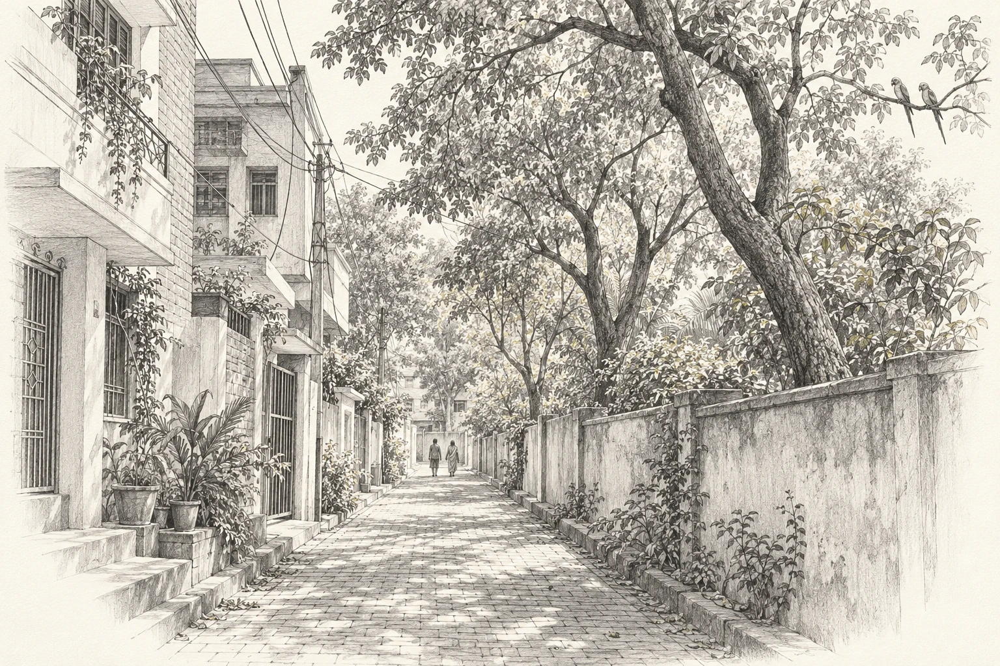
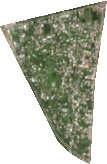
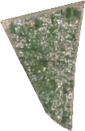
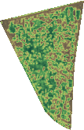
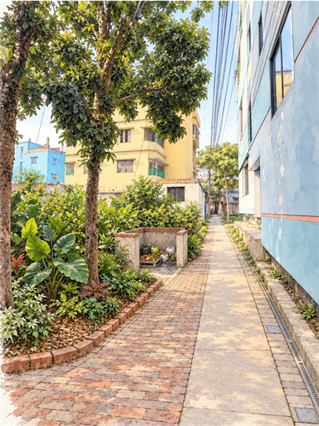
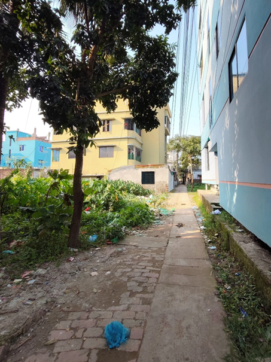
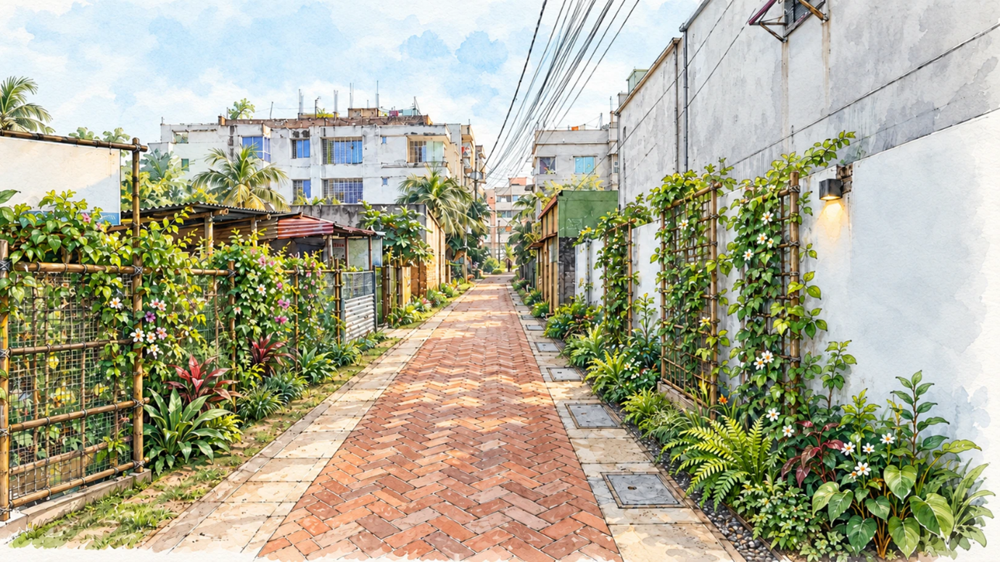
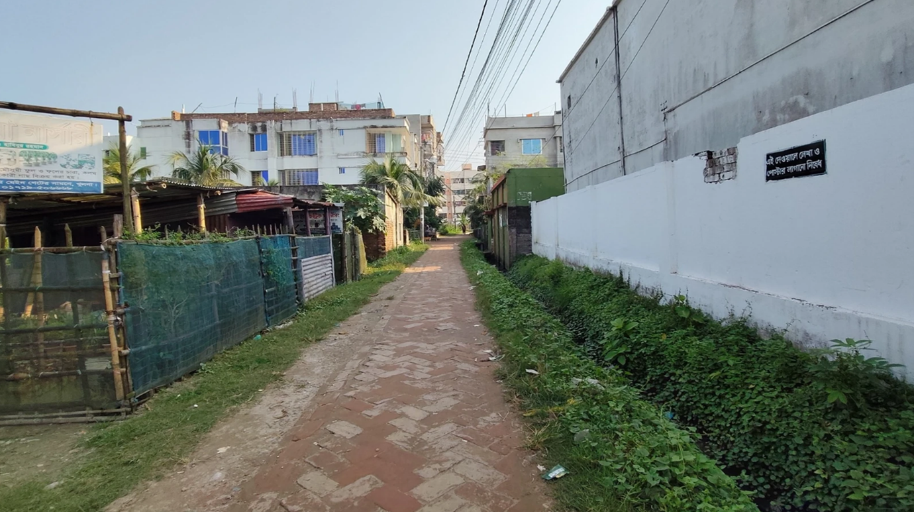

A narrow lane in Mirpur. Tall trees beside the stadium. Morning shade, and parrots in the branches. What stayed with me was the care.
Good neighborhoods begin with the trees we keep, the paths we shade, and the places we care for together.

Find your place.
Western Jhardhanga · Eastern Hogladanga
Select a layer and a cell. What could you improve for the next generation?
Seven years. One place.
Matched seasonal composites: 15 March–31 May. The third pane shows 2026 greenness, not another date. Drag either handle over the image.



20192026Greenness
Protect. Connect. Care.
Keep the trees. Leave room for roots.
Keep the way clear. From home to the main road.
Share the care. Give it a name and a budget.
Small changes. A different feeling.
01
Keep the tree. Care for the edge.
Retain mature trees. Provide an open-front waste collection bay, scheduled removal, and a residue trap that keeps kitchen solids out of the drain.


Existing conditionIllustrative proposal
02
Let the walls help.
Use frontage climbers and small planting pockets where space allows. Keep walking, cycle-van access, drains, and utilities clear.


Existing conditionIllustrative proposal
Illustrative proposals. Dimensions, access and drainage need a site-specific check before work begins.
And the buildings already here?
A fair approach starts with measured conditions and the same standards for everyone.
01
Improve now
Care for trees, frontages and drains. Add suitable greenery without reducing clear access.
02
Correct verified problems
Assess actual obstructions and violations. Use proportionate corrective work and the applicable formal review process.
03
Plan the next change
Apply the relevant rules to future extensions and redevelopment. Recognize verified compliance; planting does not replace it.
Proposed approach; any enforcement or construction permission remains with the relevant authority.
Who will do what?
More comfortable walks. Cleaner surroundings. Easier access. A more attractive place to live and rent.
01
Owners
Agree frontage work and contribute an agreed share.
02
Residents & tenants
Choose improvements, report problems, and share in the benefits.
03
Street coordinator
Keep the task list, contributions and monthly photo checklist.
04
Caretaker + backup
Water, clean and maintain on an agreed schedule and budget.
05
Qualified reviewer
Check access, drainage and feasibility before work begins.
A care agreement
Name a caretaker, a backup and a resident coordinator. Record duties, frequency and an upkeep budget in a simple signed agreement. Review monthly; arrange support or reassignment when care lapses.
a name a budget a review date✳
From plan to practice
Verify
Measure access, inspect trees and drainage, and confirm ownership.
Agree
Secure owner consent, finalize the layout and agree costs.
Pilot
Implement one manageable street segment with participating households.
Review
Check plant survival, waste collection, drainage and clear passage monthly.
How AI can help this conversation.
A planned service to turn your location and photos into an improvement you can discuss with your neighbors.
01
Locate
Mark your place and tell us what you want to improve.
02
Photograph
Share the frontage, surroundings, side walls and rooftop where relevant.
03
Visualize
AI would draft options that respect clear access, drainage and existing structures.
04
Review together
A reviewer checks the concept before residents agree the next steps.
*Part of the forthcoming land-and-building review project, connecting setbacks, clear access, drainage and shared upkeep. Surveyed drawings, land verification and construction-design checks belong to its separate review module.